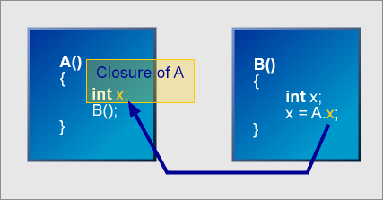

| Closures |
 |
 |
 |
Using phoenix, in the previous chapter, we've seen how we can get data from our parsers using var:
int i;
integer = int_p[var(i) = arg1];Nifty! Our rule integer, if successful, passes the parsed integer to the variable i. Everytime we need to parse an integer, we can call our rule integer and simply extract the parsed number from the variable i. There's something you should be aware of though. In the viewpoint of the grammar, the variable i is global. When the grammar gets more complex, it's hard to keep track of the current state of i. And, with recursive rules, global variables simply won't be adequate.
Closures are needed if you need your rules (or grammars) to be reentrant. For example, a rule (or grammar) might be called recursively indirectly or directly by itself. The calculator is a good example. The expression rule recursively calls itself indirectly when it invokes the factor rule.
Closures provide named (lazy) variables associated with each parse rule invocation. A closure variable is addressed using member syntax:
rulename.varnameA closure variable R.x may be addressed in the semantic action of any other rule invoked by R; it refers to the innermost enclosing invocation of R. If no such invocation exists, an assertion occurs at runtime.
Closures provide an environment, a stack frame, for local variables. Most importantly, the closure variables are accessible from the EBNF grammar specification and can be used to pass parser information upstream or downstream from the topmost rule down to the terminals in a top-down recursive descent. Closures facilitate dynamic scoping in C++. Spirit's closure implementation is based on Todd Veldhuizen's Dynamic scoping in C++ technique that he presented in his paper Techniques for Scientic C++.
When a rule is given a closure, the closure's local variables are created prior to entering the parse function and destructed after exiting the parse function. These local variables are true local variables that exist on the hardware stack.
Spirit v1.8 closure support requires Phoenix. In the future, Spirit will fully support BLL. Currently, work is underway to merge the features of both libraries. |
Let's go back to the calculator grammar introduced in the Functional chapter. Here's the full grammar again, plus the closure declarations:
struct calc_closure : boost::spirit::closure<calc_closure, double> { member1 val; }; struct calculator : public grammar<calculator, calc_closure::context_t> { template <typename ScannerT> struct definition { definition(calculator const& self) { top = expression[self.val = arg1]; expression = term[expression.val = arg1] >> *( ('+' >> term[expression.val += arg1]) | ('-' >> term[expression.val -= arg1]) ) ; term = factor[term.val = arg1] >> *( ('*' >> factor[term.val *= arg1]) | ('/' >> factor[term.val /= arg1]) ) ; factor = ureal_p[factor.val = arg1] | '(' >> expression[factor.val = arg1] >> ')' | ('-' >> factor[factor.val = -arg1]) | ('+' >> factor[factor.val = arg1]) ; } typedef rule<ScannerT, calc_closure::context_t> rule_t; rule_t expression, term, factor; rule<ScannerT> top; rule<ScannerT> const& start() const { return top; } }; };
 The full source code can be viewed here. This is part of the Spirit distribution.
The full source code can be viewed here. This is part of the Spirit distribution.
Surely, we've come a long way from the original version of this calculator. With inline lambda expressions, we were able to write self contained grammars complete with semantic actions.
The first thing to notice is the declaration of calc_closure.
Declaring closures
The general closure declaration syntax is:
struct name : spirit::closure<name, type1, type2, type3,... typeN>
{
member1 m_name1;
member2 m_name2;
member3 m_name3;
...
memberN m_nameN;
}; member1... memberN are indirect links to the actual closure variables. Their indirect types correspond to type1... typeN. In our example, we declared calc_closure:
struct calc_closure : boost::spirit::closure<calc_closure, double> { member1 val; };
calc_closure has a single variable val of type double.
|
Attaching closures
Closures can be applied to rules, subrules and grammars (non-terminals). The closure has a special parser context that can be used with these non-terminals. The closure's context is its means to hook into the non-terminal. The context of the closure C is C::context_t.
We can see in the example that we attached calc_closure to the expression, term and factor rules in our grammar:
typedef rule<ScannerT, calc_closure::context_t> rule_t; rule_t expression, term, factor;
as well as the grammar itself:
struct calculator : public grammar<calculator, calc_closure::context_t>
Closure return value
The closure member1 is the closure's return value. This return value, like the one returned by anychar_p, for example, can be used to propagate data up the parser hierarchy or passed to semantic actions. Thus, expression, term and factor, as well as the calculator grammar itself, all return a double.
Accessing closure variables
Closure variables can be accessed from within semantic actions just like you would struct members: by qualifying the member name with its owner rule, subrule or grammar. In our example above, notice how we referred to the closure member val. Example:
expression.val // refer to expression's closure member valInitializing closure variables
We didn't use this feature in the example, yet, for completeness...
Sometimes, we need to initialize our closure variables upon entering a non-terminal (rule, subrule or grammar). Closure enabled non-terminals, by default, default-construct variables upon entering the parse member function. If this is not desirable, we can pass constructor arguments to the non-terminal. The syntax mimics a function call.
For (a contrived) example, if you wish to construct calc_closure's variables to 3.6, when we invoke the rule expression, we write:
expression(3.6) // invoke rule expression and set its closure variable to 3.6The constructor arguments are actually Phoenix lambda expressions, so you can use arbitrarily complex expressions. Here's another contrived example:
// call rule factor and set its closure variable to (expression.x / 8) * factor.y
factor((expression.x / 8) * term.y) We can pass less arguments than the actual number of variables in the closure.
The variables at the right with no corresponding constructor arguments are default
constructed. Passing more arguments than there are closure variables is an error.
We can pass less arguments than the actual number of variables in the closure.
The variables at the right with no corresponding constructor arguments are default
constructed. Passing more arguments than there are closure variables is an error.
 See parameters.cpp for a compilable example. This is part of the Spirit distribution.
See parameters.cpp for a compilable example. This is part of the Spirit distribution.
Let's write a very simple parser for an XML/HTML like language with arbitrarily nested tags. The typical approach to this type of nested tag parsing is to delegate the actual tag matching to semantic actions, perhaps using a symbol table. For example, the semantic actions are responsible for ensuring that the tags are nested (e.g. this code: <p><table></p></table> is erroneous).
Spirit allows us to dynamically modify the parser at runtime. The ability to guide parser behavior through semantic actions makes it possible to ensure the nesting of tags directly in the parser. We shall see how this is possible. here's the grammar in its simplest form:
element = start_tag >> *element >> end_tag;
An element is a start_tag (e.g. <font>) folowed by zero or more elements, and ended by an end_tag (e.g. </font>). Now, here's a first shot at our start_tag:
start_tag = '<' >> lexeme_d[(+alpha_p)] >> '>';
Notice that the end_tag is just the same as start_tag with the addition of a slash:
end_tag = "</" >> what_we_got_in_the_start_tag >> '>';
What we need to do is to temporarily store what we got in our start_tag and use that later to parse our end_tag. Nifty, we can use the parametric parser primitives to parse our end_tag:
end_tag = "</" >> f_str_p(tag) >> '>';
where we parameterize f_str_p with what we stored (tag).
Be reminded though that our grammar is recursive. The element rule calls itself. Hence, we can't just use a variable and use phoenix::var or boost::ref. Nested recursion will simply gobble up the variable. Each invocation of element must have a closure variable tag. Here now is the complete grammar:
struct tags_closure : boost::spirit::closure<tags_closure, string> { member1 tag; }; struct tags : public grammar<tags> { template <typename ScannerT> struct definition { definition(tags const& /*self*/) { element = start_tag >> *element >> end_tag; start_tag = '<' >> lexeme_d [ (+alpha_p) [ // construct string from arg1 and arg2 lazily // and assign to element.tag element.tag = construct_<string>(arg1, arg2) ] ] >> '>'; end_tag = "</" >> f_str_p(element.tag) >> '>'; } rule<ScannerT, tags_closure::context_t> element; rule<ScannerT> start_tag, end_tag; rule<ScannerT, tags_closure::context_t> const& start() const { return element; } }; };
We attached a semantic action to the (+alpha_p) part of the start_tag. There, we stored the parsed tag in the element's closure variable tag. Later, in the end_tag, we simply used the element's closure variable tag to parameterize our f_str_p parser. Simple and elegant. If some of the details begin to look like greek (e.g. what is construct_?), please consult the Phoenix chapter.
 The full source code can be viewed here. This is part of the Spirit distribution.
The full source code can be viewed here. This is part of the Spirit distribution.
What are Closures?
The closure is an object that "closes" over the local variables of a function making them visible and accessible outside the function. What is more interesting is that the closure actually packages a local context (stack frame where some variables reside) and makes it available outside the scope in which they actually exist. The information is essentially "captured" by the closure allowing it to be referred to anywhere and anytime, even prior to the actual creation of the variables.
The following diagram depicts the situation where a function A (or rule) exposes its closure and another function B references A's variables through its closure.
|  |
| The
closure as an object that "closes" over the local variables
of a function making them visible and accessible outside the function |
Of course, function A should be active when A.x is referenced. What this means is that function B is reliant on function A (If B is a nested function of A, this will always be the case). The free form nature of Spirit rules allows access to a closure variable anytime, anywhere. Accessing A.x is equivalent to referring to the topmost stack variable x of function A. If function A is not active when A.x is referenced, a runtime exception will be thrown.
Nested Functions
To fully understand the importance of closures, it is best to look at a language such as Pascal which allows nested functions. Since we are dealing with C++, lets us assume for the moment that C++ allows nested functions. Consider the following pseudo C++ code:
void a() { int va; void b() { int vb; void c() { int vc; } c(); } b(); }
We have three functions a, b and c where c is nested in b and b is nested in a. We also have three variables va, vb and vc. The lifetime of each of these local variables starts when the function where it is declared is entered and ends when the function exits. The scope of a local variable spans all nested functions inside the enclosing function where the variable is declared.
Going downstream from function a to function c, when function a is entered, the variable va will be created in the stack. When function b is entered (called by a), va is very well in scope and is visble in b. At which point a fresh variable, vb, is created on the stack. When function c is entered, both va and vb are visibly in scope, and a fresh local variable vc is created.
Going upstream, vc is not and cannot be visible outside the function c. vc's life has already expired once c exits. The same is true with vb; vb is accessible in function c but not in function a.
Nested Mutually Recursive RulesNow consider that a, b and c are rules:
a = b >> *(('+' >> b) | ('-' >> b)); b = c >> *(('*' >> c) | ('/' >> c)); c = int_p | '(' >> a >> ')' | ('-' >> c) | ('+' >> c);
We can visualize a, b and c as mutually recursive functions where a calls b, b calls c and c recursively calls a. Now, imagine if a, b and c each has a local variable named value that can be referred to in our grammar by explicit qualification:
a.value // refer to a's value local variable b.value // refer to b's value local variable c.value // refer to c's value local variable
Like above, when a is entered, a local variable value is created on the stack. This variable can be referred to by both b and c. Again, when b is called by a, b creates a local variable value. This variable is accessible by c but not by a.
Here now is where the analogy with nested functions end: when c is
called, a fresh variable value is created which, as usual, lasts the
whole lifetime of c. Pay close attention however that c may
call a recursively. When this happens, a may now refer to
the local variable of c.
|
|
|
Copyright © 1998-2003 Joel de Guzman
Use, modification and distribution is subject to the Boost Software
License, Version 1.0. (See accompanying file LICENSE_1_0.txt or copy at
http://www.boost.org/LICENSE_1_0.txt)